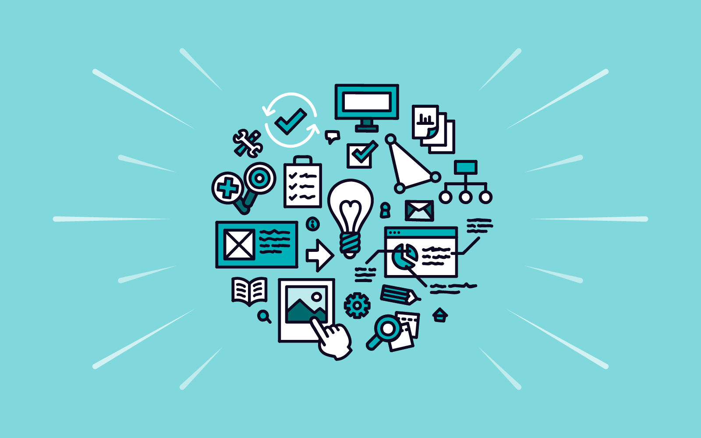

Shark Cinema Design
Role UI / UX Designer
Context Website Creation
Period 2022 February - 2022 March
The Project
Shark Cinema is little family owned cinema in the heart of the city. The cinema’s website/application provides an easy solution to check what is playing right now, book Movie tickets and seats in advance, furthermore to but snacks even before entering the cinema to avoid queues.
The Problem
Smaller movie theaters do not have responsive websites thus making it hard to know what is
playing at the moment.
Paying for the tickets and snacks right before the movie starts can be a long and tiring
process.
The Goal
Design a responsive website to be user friendly. Create a user-flow that allows the user to book seats and buy snacks in advance.
User research: summary

Interviews were conducted based on which empathy maps were created to understand the users.
This app aims to provide a user friendly experience. A primary user group identified through
research was young adults who do not want to spend a long time in the queue before a movie.
This user group confirmed that the younger generation wants to have everything ready in the
reservation process even before entering the cinema, thus they want to get everything ready in
the comfort of their own home.
Persona Problem Statement
"Szabi is a busy web engineer who needs a website where he can easily book cinema tickets because they want to avoid long queues at the movie theater."

Digital Wireframes
The goal was to easily choose a movie, and book seats in advance. The app showcases the seating, and provides an easy picking and confirming window the reserve them.
Low-Fidelity Prototype
In the low-fidelity prototype I connected all of the screens involved into a primary user flow. The user chooses a movie, reserves a seat, chooses a snack then confirms their purchase.
Usability study: findings
Some of the users wanted to make sure that they reserved and ordered the food. So after the checkout page a new confirmation page was added.
High fidelity prototype
The hi-fi prototype followed the same user flow as the lo-fi prototype. The changes made after the usability study, as well as several changes suggested by members of the team. Link
Takeaways from the project
Our target audience shared that the design was seamless to navigate through, it was visually pleasing and captivating, moreover it demonstrated a clear visual hierarchy.
What I learned
I learned that user research can deeply benefit the creation of the website making process. Furthermore, using visually pleasing colors, fonts and images help to engage users’ attention.